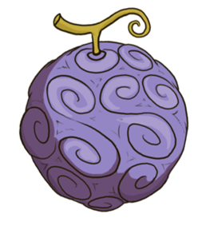

<!DOCTYPE html>
<html lang="en">
</html>
<head>
  <meta charset="UTF-8">
  <meta name="viewport" content="width=device-width", initial-scale="1.0">
  <link rel="preconnect" href="https://fonts.googleapis.com">
  <link rel="preconnect" href="https://fonts.gstatic.com" crossorigin>
  <link href="https://fonts.googleapis.com/css2?family=Hepta+Slab:wght@400;500;600;700&family=Inter:wght@400;500;700&family=Mitr:wght@300;400;500&family=Passion+One:wght@700&family=Pirata+One&family=Racing+Sans+One&display=swap" rel="stylesheet">
  <link rel="stylesheet" href="onepiece101.css">
  <title>OnePiece101.com</title>
</head>
<body>
  <div class="web-content"> <!--Start of Website Container-->
    <div class="navigation-bar"> <!--Start of Navigation Bar-->
      <div class="OnePiece101-header-logo">
        <span class="clickable-logo">ONEPIECE101.COM</span>
      </div>    
      <div class="navigation-buttons">
        <button class="Home">
          Home
        </button>
        <button class="Learn">
          <div>
            Learn
          </div>
          <div class="Learn-options">
            <div class="option-1">
              Plot & Characters
            </div>
            <div class="option-2">
              Best Episodes/Arcs
            </div>
            <div class="option-3">
              Trivia & Fun Facts
            </div>
            <div class="option-4">
              News and Updates
            </div>
          </div>
        </button>
        <button class="Community">
          <div>
            Community
          </div>
          <div class="Community-options">
            <div class="option-1">
              Newcomer Corner
            </div>
            <div class="option-2">
              Forum
            </div>
          </div>
        </button>
        <button class="Log-In">
          Log In
        </button>
      </div>
      <div class="Hamburger-menu">
        <div id="menu-line-1"></div>
        <div id="menu-line-2"></div>
        <div id="menu-line-3"></div>
      </div>
    </div> <!--End of Navigation Bar-->
    <div class="hero-section"> <!--Start of Hero Section-->
      <div class="hero-section-info">
        <h1 class="hero-section-tagline">
          <span class="tagline-1stparagraph">Discover the World </span>
          <span class="tagline-2ndparagraph">Of One Piece</span>
        </h1>
        <div class="hero-section-p-container">
          <p class="hero-section-1stparagraph"> 
            Still deciding whether to start the 1000+ chapter and episode anime? 
            Let us be your gateway to the adventure!
          </p>
          <p class="hero-section-2ndparagraph">
            This website aspires to introduce you to the record-breaking manga and anime 
            sensation, One Piece, and perhaps, this might be the final push that you need!
          </p>
        </div>
      </div>
      <div class="hero-section-logo">
        
      </div>
    </div> <!--End Of Hero Section-->
    <div class="About-One-Piece"> <!--Start of About One Piece Section-->
      <h1 class="About-One-Piece-header">
        About One Piece
      </h1>
      <p class="About-One-Piece-description">
        Monkey D. Luffy's dream is to discover the fabled 'One Piece' treasure and 
        claim the title of Pirate King. To achieve this, he forms a diverse crew of 
        loyal pirates, each with their unique skills and aspirations.
        Together, they navigate the perilous Grand Line, where ancient secrets and 
        fearsome adversaries await. In a world where the enigmatic Devil Fruits grant 
        incredible powers, Luffy and his crew confront these challenges head-on, forming 
        unbreakable bonds along the way.
      </p>
    </div> <!--End of About One Piece Section-->
    <div class="Why-One-Piece"> <!--Start of Why One Piece Section-->
      <h1 class="Why-One-Piece-header">
        Why One Piece?
      </h1>
      <p class="Why-One-Piece-description">
        The storytelling in One Piece is unparalleled and deeply engrossing. 
        This iconic anime not only boasts a captivating narrative with twists and 
        turns at every corner but also fearlessly tackles real-life societal issues. 
        With its rich character development and exploration of profound themes, One Piece offers 
        a truly unique and thought-provoking adventure that will leave you entertained and 
        inspired.
      </p>
    </div> <!--End of Why One Piece Section-->
    <div class="Manga-Anime-Sites"> <!--Start of Manga and Anime Sites Section-->
      <h1 class="Manga-Anime-Sites-header">
        Manga and Anime Sites
      </h1>
      <div class="Manga-Anime-Sites-info">
        <p class="Manga-Anime-Sites-description">
          Explore our list of available online platforms to view One Piece, offering an array of options 
          for enjoying the series in both anime and manga formats. Dive into the thrilling adventures of 
          the Grand Line with these accessible destinations, each providing unique content and experiences 
          to enhance your One Piece journey.
        </p>
        <div class="Anime-Sites">
          Anime sites: 
          <a href="https://www.crunchyroll.com/series/GRMG8ZQZR/one-piece" class="site-link" target="_blank">crunchyroll.com</a>, 
          <a href="https://www.funimation.com/" class="site-link" target="_blank">funimation.com</a>, 
          <a href="https://www.hulu.com/welcome" class="site-link" target="_blank">hulu.com</a>, 
          <a href="https://www.anime-planet.com/" class="site-link" target="_blank">anime-planet.com</a>, 
          <a href="https://kitsu.io/explore/anime" class="site-link" target="_blank">kitsu.io</a>,
          <a href="https://www.hidive.com/" class="site-link" target="_blank">hidive.com</a>, 
          <a href="https://animeflix.live/" class="site-link" target="_blank">animeflix.live</a>, 
          <a href="https://9anime.me/" class="site-link" target="_blank">9anime.me</a> 
          <button class="see-more-button">
            See more
          </button>
        </div>
        <div class="Manga-Sites">
          Manga sites: 
          <a href="https://mangaplus.shueisha.co.jp/updates" class="site-link" target="_blank">mangaplus.com</a>, 
          <a href="https://bato.to/" class="site-link" target="_blank">bato.to</a>, 
          <a href="https://fanfox.net/" class="site-link" target="_blank">fanfox.net</a>, 
          <a href="https://mangareader.to/" class="site-link" target="_blank">mangareader.to</a>, 
          <a href="https://www.anime-planet.com/" class="site-link" target="_blank">anime-planet.com</a>, 
          <a href="https://mangareader.tv/" class="site-link" target="_blank">mangareader.tv</a>, 
          <a href="https://mangatoon.mobi/" class="site-link" target="_blank">mangatoon.mobi</a> 
          <button class="see-more-button">
            See more
          </button>
        </div>
      </div>
    </div> <!--End of Manga and Anime Sites Section-->
    <div class="Content-Article"> <!--Start of Content-Article Section-->
      <div class="Content"> <!--Start of Content Section-->
        <h1 class="Content-header">
          Content
        </h1>
        <ul class="content-list">
          <li>Main Characters</li>
          <li>Pirates</li>
          <li>Story Arcs</li>
          <li>Marines</li>
          <li>Three Great Powers</li>
          <li>Revolutionary</li>
          <li>Ancient Weapons</li>
          <li>Devil Fruits</li>
          <li>Haki</li>
          <li>World Map & Poneglyphs</li>
        </ul>
      </div> <!--End Of Content Section-->
      <div class="Featured-Fan-Article"> <!--Start of Fan Article Section-->
        <h1 class="Featured-Fan-Article-header">
          Featured Fan Article
        </h1>
        <div class="Fan-Article-content">
          <div class="article-picture-container">
            
          </div>
          <div class="article-content">
            <p class="article-title">
              Is there a superior devil fruit?
            </p>
            <div class="article-author-byline">
              <p class="article-author">
                By: OnePieceExplorerSince2018
              </p>
              <p class="article-publishing-date">
                Published: September 30, 2023
              </p>
            </div>
            <div class="article-info">
              <p class="article-paragraph1">
                One question that often arises among fans is whether there is such thing
                as a superior Devil Fruit.
              </p>
              <p class="article-paragraph2">
                Is it the type of fruit that matters, or does the true power depend on
                the user's imagination and creativity? <button class="full-story-button">
                Full Story Here</button>
              </p>
            </div>
          </div>
        </div>
      </div> <!--End Of Fan Article Section-->
    </div> <!--End Of Content-Article Section-->
    <footer> <!--Start of Footer Section-->
      <div class="OnePiece101-footer-logo">
        ONEPIECE101.COM
      </div>
      <div class="footer-content">
        <p class="footer-tagline">
          Explore the Grand Line with us! For more One Piece content, follow us on: 
        </p>
        <div class="social-media-icons">
          
          
          
          
        </div>
      </div>
    </footer> <!--End Of Footer Section-->
  </div> <!--End of Website Container-->
</body>
</html>
